Swords-Sheilds-Tunics- Boots-Items
| Name | Picture | Description |
| Kokiri Sword | 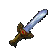 | The first sword you get, which is found through the hole at the top of the training ground in Kokiri Forest. The sword is very weak, it takes like 8 normal swings to take out a ReDead! |
| Master Sword | 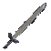 | You get this sword when you have retrieved all three spiritual stones and returned to the Temple of Time. You sing the Song of Time by the Door of Time, etc. Pull it out of the pedestal and voila! This sword is twice as powerful as your Kokiri Sword and is required to defeat the final boss, Ganon |
| Giant's Knife | 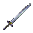 | You buy this sword from the Big Goron in Goron City after you've grown up. It is twice as powerful as the Master Sword but will break when you bang it on stone or whatever. It really sucks when that happens |
| Biggoron's Sword | |
You get this sword from Biggoron on the Top of Death Mountain after you finish the Adult Link's Trading Sequence ( Howto ) and bring him the Claim Check after 3 days. This sword is good and very useful, twice as powerful as the so-called "Master" sword. |
| Name | Picture | Description |
| Deku Sheild |  |
You must by this shield from the guy in the Kokiri shop for 40 rupees. It is small and will burn when lit on fire. Can only be used by Young Link. |
| Hylian Sheild | 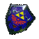 | You can find this sheild in the graveyard in Kakariko Village or buy it from the guy in Bazaar when you're a kid for 80 rupees. Young Link can use it but it's best used by Adult Link |
| Mirror Sheild | 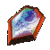 | You find this sheild in the Spirit Temple as Adult Link. It can reflect light onto things and can only be used by Adult Link. This one's my favorite. |
| Name | Picture | Description |
| Kokiri Tunic | 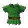 | You start with
this tunic which can be worn by Young or Adult Link. It has no special abilities whatsoever. I just like the color |
| Goron Tunic | 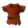 | You can buy this for 200 rupees at the Goron Shop or get it for free from the little guy rolling around Goron City when you're an Adult. Just put a bomb in his path. This tunic is fire resisitant and will let you survive in hot places like Death Mountain Crater or the Fire Temple |
| Zora Tunic | 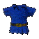 | You can get this one for 300 rupees at the Zora Shop when you're a kid or get it for free from the King of Zoras. The Zora Tunic will let you breath under water forever |
| Name | Picture | Description |
| Kokiri Boots | 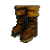 | You start the game with these and they can be worn by Young or Adult Link. No special abilities. |
| Iron Boots | 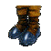 | You get these in the Ice Cavern in Zora's Fountain when you're Adult Link. They let you sink to the bottom of ponds, lakes, etc, so that you can walk on the bottom. You can also use them to stay put while in a river with a current or when there is a fan blowing or when you're on ice. |
| Hover Boots | 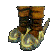 | You get these in the Shadow Temple. These boots let you hover an inch above the ground or so, and they will let you hover in the air for a couple seconds like when you walk off a cliff. Very handy. |
| Name | Picture | Description |
| Deku Nut | 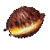 | When thrown, it will explode in a flash of Light, blinding some enemies. |
| Deku Stick | 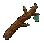 | Can be used as a weapon that breaks when you hit something or a torch. |
| Fairy Slingshot | 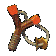 | Used to fire Deku Seeds at enemies and targets. |
| Seed Bag | 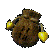 | Holds all your Deku Seeds. Max=30-40-50 |
| Fairy Ocarina | 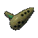 | Saria gives you this when you leave the forest. You learn your first tunes on this. |
| Bottle | 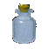 | Used to hold Fairies, Letters, Fish, Bugs, etc. |
| Goron Bacelet |  |
Darunia givevs you this so you can pick Bomb Flowers up. |
| Bomb Bag | 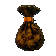 | Holds all your bombs. Max=30-40-50 |
| Bombs | 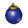 | Used to blow up fake walls and doors and for killing some enemies. |
| Din's Fire | 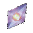 | A spell that creates a dome of fire around you and expands. |
| Bombchus | 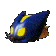 | Bombs carried on mechanical mice to thier target |
| Magic Beans | 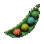 | Planted as a child, they became ridable platforms as an adult |
| Farore's Wind | 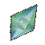 | A Spell taht warped to to different spots in dungeons. |
| Boomerang | 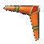 | A Distance weapon used to hit enemies and retrieve objects. |
| Ocarina of Time | 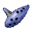 | Zelda gives you this to learn most of your songs and open the door of time. |
| Hookshot | 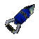 | A Distance weapon used to hit enemies and retriev objects. It also can pull Link forward to an object. |
| Quiver | 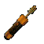 | Holds all your arrows. Max=30-40-50 |
| Fairy Bow | 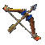 | A bow used to hit enemies and targets. |
| Megaton Hammer | 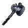 | A large hammer that can be used to push down rusted switches and destroy rocks and statues. It also flips some enemies over. |
| Longshot | An upgrade to the Hookshot. | |
| Fire Arrows | 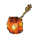 | A Magical arrow that explodes in a rush of fire upon impact. Uses Magic. |
| Lens of Truth | 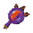 | A Lens witch allows Link to see hidden objects. Uses Magic. |
| Ice Arrows | 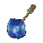 | A Magical arrow that explodes in a rush of cold icy air upon impact. Uses Magic. |
| Nayru's Love | 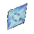 | A Spell which creates a diamond of protection around you. You can't shoot arrows or hookshot or stuff like that when its in use. |
| Light Arrows | 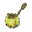 | A Magical arrow that explodes in a rush of Light upon impact. Uses Magic. |
| Compass | 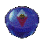 | Lets you figure out where you are in a room in a dungeon. |
| Silver Scale |  |
Lets you dive up to 6 meters |
| Golden Scale | None | Lets you dive up to 8 meters |
| Map | 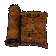 | Shows you all the rooms in a dungeon, even the ones you haven't visited |
| Boss Key | 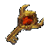 | Allows you to enter the Boss Room. |
| Stone of Agony | 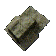 | Vibrates your Rumble Pack when you are near a hidden place |